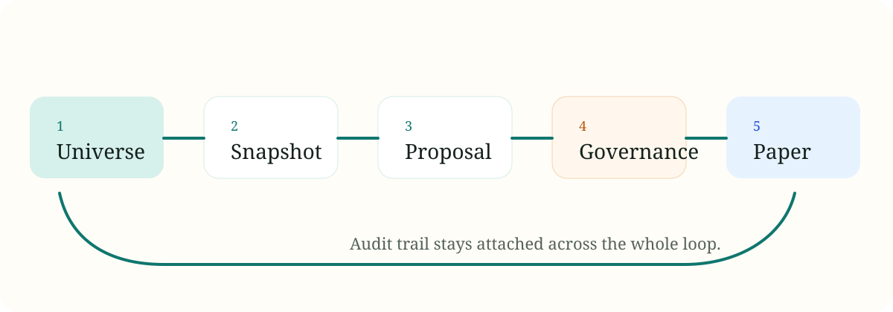

Research With Context
Universe selection, macro context, and strategy prompts feed one reviewable market snapshot.
OpenHamster keeps the wheel turning in the background: symbol selection, prompt contracts, governance gates, paper-trading state, and audit history stay reviewable instead of hidden.
Why
Universe selection, macro context, and strategy prompts feed one reviewable market snapshot.
Promotion and rejection are explicit outputs, not hidden side effects of an opaque agent loop.
Orders, positions, NAV, and runtime events remain inspectable from the dashboard and event trail.
Flow

Surface
Runtime heartbeat, slot focus, blockers, and paper summary.
Proposal evidence pack, market rationale, debate, and quality report.
Active strategy, holdings, NAV curve, and execution explanations.
Decision timeline, universe changes, provider fallback events, and cause chain.
Start
pip install -e .[dev]
alembic upgrade head
openhamster-apinpm install --prefix apps/web
npm run dev --prefix apps/webBoundary
OpenHamster is intentionally constrained. Paper-trading success does not imply live-trading readiness, and old legacy runtime paths are not part of the public roadmap.